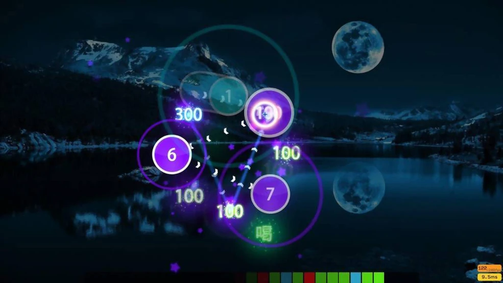

About osu!
osu! is a dynamic rhythm game that blends music and precision-based gameplay, captivating players with its engaging mechanics and vibrant community. The game revolves around hitting circles, following sliders, and performing spins in time with the beat of the music, providing an immersive and skill-intensive experience. Originally inspired by the Nintendo DS game "Osu! Tatakae! Ouendan," osu! has evolved far beyond its roots, establishing itself as a staple in the rhythm gaming scene.
What truly sets osu! apart is its passionate, user-driven community. Players can create and share custom beatmaps, design skins, and develop mods to personalize their gameplay. Community involvement extends to competitive play, with international tournaments and leaderboards that foster a spirit of friendly competition.
osu! isn't just about playing to win; it’s about experiencing music in a whole new way, where rhythm meets challenge, and every beat brings you closer to mastering the game.

Game
osu! is a free-to-play rhythm game where players interact with music by hitting circles, sliders, and spinners in sync with the beat. The game is designed to test players' timing, precision, and speed, with each beatmap (a custom level) set to a song that determines the flow and difficulty.
Originally developed by Dean "peppy" Herbert in 2007, osu! has grown into a global sensation, appealing to both casual players and competitive gamers. It features four main game modes:
osu!standard: The core mode focused on tapping circles and following sliders to the music.
osu!mania: A keyboard-based mode reminiscent of traditional rhythm games where players hit notes as they descend.
osu!catch: Players control a character to catch falling fruits to the beat of the music.
osu!taiko: Inspired by Japanese taiko drumming, where players tap along with the rhythm.
The game is community-driven, allowing players to create and share beatmaps, skins, and mods. It supports a competitive scene with ranked leaderboards and tournaments, making osu! more than just a game but a shared experience centered around music and rhythm.
Description
osu! is a rhythm-based online game that challenges players to hit circles, sliders, and spinners in time with the beat of the music. Originally inspired by the Nintendo DS game "Osu! Tatakae! Ouendan," it has grown into a popular community-driven game where players can create and share their own beatmaps.
The game offers multiple modes: osu!standard (the classic click-and-drag rhythm gameplay), osu!mania (a keyboard-based mode similar to dance and rhythm games), osu!catch (where players catch falling fruits to the rhythm), and osu!taiko (drum-based gameplay). osu! is known for its high skill ceiling, competitive leaderboard, and a strong community that regularly organizes tournaments and events.
The game is free-to-play, making it accessible for everyone, and has amassed a global community of players who enjoy competing, creating beatmaps, or simply playing for fun.
History of osu!
Creation and Launch (2007)
osu! was created by Australian developer Dean "peppy" Herbert and was initially released on September 16, 2007. Inspired by the Nintendo DS game "Osu! Tatakae! Ouendan," peppy aimed to create a rhythm game that could be played on a computer, allowing for user-generated content and a robust online community. The game was free to play, making it accessible to a broad audience.
Early Growth (2007-2009)
In its early days, osu! garnered attention for its unique gameplay mechanics, including the ability for players to create and share their own beatmaps. This user-generated content became a defining feature of the game, as players could customize their experience by uploading their favorite songs and designing maps. The community began to grow rapidly, with dedicated forums and support systems to foster collaboration and sharing.
Expansion of Game Modes (2009-2012)
In 2009, osu! expanded its gameplay by introducing additional modes: osu!taiko, which emulates traditional Japanese drumming, and osu!catch, where players control a character to catch falling fruits to the rhythm of the music. In 2012, osu!mania, a mode that mimics traditional vertical scrolling rhythm games, was also added. These modes attracted a diverse audience and enhanced the game’s overall appeal.
Community and Competitive Scene (2012-Present)
As the player base continued to grow, osu! became a prominent figure in the rhythm game community. Various online competitions and tournaments began to emerge, leading to the establishment of a competitive scene. The game's ranking system allowed players to compete for high scores on a global scale, creating a sense of achievement and motivation.